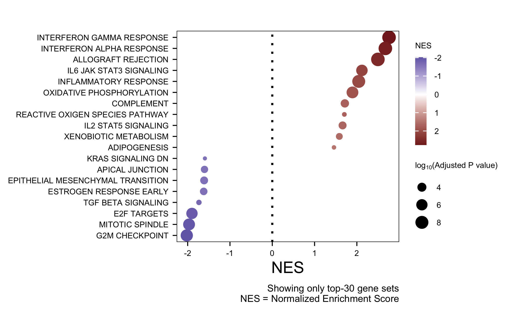

Analysis of AMHR2 KO RNA-seq data
Francesc Castro-Giner
July 01, 2025
Last updated: 2025-07-01
Checks: 7 0
Knit directory: saini-stealTHY/
This reproducible R Markdown analysis was created with workflowr (version 1.7.1). The Checks tab describes the reproducibility checks that were applied when the results were created. The Past versions tab lists the development history.
Great! Since the R Markdown file has been committed to the Git repository, you know the exact version of the code that produced these results.
Great job! The global environment was empty. Objects defined in the global environment can affect the analysis in your R Markdown file in unknown ways. For reproduciblity it’s best to always run the code in an empty environment.
The command set.seed(20240517) was run prior to running
the code in the R Markdown file. Setting a seed ensures that any results
that rely on randomness, e.g. subsampling or permutations, are
reproducible.
Great job! Recording the operating system, R version, and package versions is critical for reproducibility.
Nice! There were no cached chunks for this analysis, so you can be confident that you successfully produced the results during this run.
Great job! Using relative paths to the files within your workflowr project makes it easier to run your code on other machines.
Great! You are using Git for version control. Tracking code development and connecting the code version to the results is critical for reproducibility.
The results in this page were generated with repository version bc402e6. See the Past versions tab to see a history of the changes made to the R Markdown and HTML files.
Note that you need to be careful to ensure that all relevant files for
the analysis have been committed to Git prior to generating the results
(you can use wflow_publish or
wflow_git_commit). workflowr only checks the R Markdown
file, but you know if there are other scripts or data files that it
depends on. Below is the status of the Git repository when the results
were generated:
Ignored files:
Ignored: .DS_Store
Ignored: .Rhistory
Ignored: .Rproj.user/
Ignored: analysis/.DS_Store
Ignored: code/.DS_Store
Ignored: code/raw_data_processing/rnaseq/p27851_o32062/pipelines/
Ignored: configuration/.DS_Store
Ignored: data/.DS_Store
Ignored: data/crispr/
Ignored: data/resources/
Ignored: data/rnaseq/
Ignored: output/.DS_Store
Ignored: output/clinical/
Ignored: output/crispr/
Ignored: output/rnaseq/
Untracked files:
Untracked: analysis/crispr-hsapiens_2180_sgRNA_r1.Rmd
Untracked: analysis/crispr-mm_2215_sgRNA-CMT167-LLC1-CT26.Rmd
Untracked: analysis/crispr-mm_2215_sgRNA-clonality_r1.Rmd
Untracked: analysis/crispr-mm_2215_sgRNA-r2oD_r1.Rmd
Untracked: analysis/crispr-muller-mm_2215_sgRNA.Rmd
Untracked: analysis/templates/
Untracked: code/R-functions/subchunkify.R
Unstaged changes:
Modified: .gitignore
Modified: analysis/crispr-hsapiens_2180_sgRNA.Rmd
Modified: analysis/crispr-mm_2215_sgRNA-StealTHY.Rmd
Modified: analysis/crispr-mm_2215_sgRNA-clonality.Rmd
Modified: analysis/crispr-mm_2215_sgRNA-r2oC.Rmd
Modified: code/R-functions/gse_report.r
Modified: configuration/rmarkdown/ggplot_theme.R
Modified: update_workflowr.R
Note that any generated files, e.g. HTML, png, CSS, etc., are not included in this status report because it is ok for generated content to have uncommitted changes.
These are the previous versions of the repository in which changes were
made to the R Markdown (analysis/rnaseq-amhr2_ko-deg.Rmd)
and HTML (docs/rnaseq-amhr2_ko-deg.html) files. If you’ve
configured a remote Git repository (see ?wflow_git_remote),
click on the hyperlinks in the table below to view the files as they
were in that past version.
| File | Version | Author | Date | Message |
|---|---|---|---|---|
| Rmd | bc402e6 | Francesc Castro-Giner | 2025-07-01 | uodate rnaseq analysis |
1 Load libraries, additional functions and data
Setup environment
knitr::opts_chunk$set(results='asis', echo=TRUE, message=FALSE, warning=FALSE, error=FALSE, fig.align = 'center', fig.width = 3.5, fig.asp = 0.618, dpi = 600, dev = c("png", "pdf"), engine.opts = list(bash = "-l"))
options(stringsAsFactors = FALSE)
use_seed <- 1100101
set.seed(use_seed)
dir.create(params$output_dir, recursive = TRUE, showWarnings = FALSE)Load packages
library(tidyverse)
library(showtext)
library(foreach)
library(DT)
library(knitr)
library(kableExtra)
library(cowplot)
library(colorblindr)
library(RColorBrewer)
library(ggbeeswarm)
library(ggrepel)
library(magrittr)
library(openxlsx)
library(SummarizedExperiment)
library(edgeR)
library(DESeq2)
library(scuttle)
library(scran)
library(pheatmap)
library(PCAtools)
library(org.Mm.eg.db)
library(ComplexHeatmap)
library(circlize)Load ggplot theme
source("./configuration/rmarkdown/ggplot_theme.R")Set color palettes
Load custom functions
source('./code/R-functions/dge_wrappers.r')
source('./code/R-functions/dge_report.r')
source('./code/R-functions/gse_omnibus.r')
source('./code/R-functions/gse_report.r')
source('./code/R-functions/subchunkify.R')Load MSigDB gene sets
gmt_files_symbols <- list(
msigdb.h = paste0(params$msigdb_dir, '/', params$msigdb_vs, '/mh.all.', params$msigdb_vs, '.symbols.gmt')
)Clean files generated in previous runs
rmd_file <- current_input()
if(!is.null(rmd_file)) {
figures_dir <- file.path('./docs/figure',rmd_file)
if(dir.exists(figures_dir)) {
unlink(file.path(figures_dir, "*"))
}
}2 Configure analyses
2.1 Data wrangling
Load SE onjecct
se <- readRDS(params$se_path)Modify sample annotation
se$sample_alias %>%
gsub('_rep.', '', .) %>%
unique[1] “AMHR2_Control_culture” “AMHR2_KO_culture”
“AMHR2_KO_noTGFbeta”
[4] “AMHR2_Overexpression” “InVivo_AMHR2_KO” “InVivo_Control_sgRNA”
colData(se) %<>%
data.frame %>%
mutate(
condition = sample_alias %>% gsub('_rep.', '', .),
condition_short = case_match(
condition,
"AMHR2_Control_culture" ~ "c_AMHR2_ctrl",
"AMHR2_KO_culture" ~ "c_AMHR2_KO",
"AMHR2_KO_noTGFbeta" ~ "AMHR2_KO_noTGFb",
"AMHR2_Overexpression" ~ "AMHR2_over",
"InVivo_AMHR2_KO" ~ "i_AMHR2_KO",
"InVivo_Control_sgRNA" ~ "i_ctrl_sgRNA"
),
sample_type = condition_short,
condition = factor(condition),
condition_short = factor(condition_short)
) %>% DataFrame
# colData(se) %<>% data.frame %>%
# mutate(
# sample_type_grouped = sample_type,
# sample_type_grouped = ifelse(sample_type == 'ctc_cluster_heterotypic_dn',
# 'ctc_cluster_heterotypic',
# sample_type_grouped),
# sample_type_grouped_3l = ifelse(sample_type == 'ctc_cluster_wbc',
# 'ctc_cluster_heterotypic',
# sample_type_grouped),
# sample_type_grouped_2l = ifelse(sample_type_grouped == 'ctc_cluster_heterotypic',
# 'ctc_cluster',
# sample_type_grouped)
# ) %>%
# DataFrameFiltering out low-abundance features. Keeping those features with at least 10 counts in at least 50% of samples of the smallest group.
use_rows <- filterByExpr(se, group=se$condition, min.count = 10, min.total.count = 15, min.prop = 0.5)
se <- se[use_rows,]TMM normalization
norm_method <- "TMM"
exprs_mat_for_norm <- assay(se, 'counts')
norm_factors <- calcNormFactors(exprs_mat_for_norm, method = norm_method)
lib_size <- colSums(exprs_mat_for_norm)/10^6
se$size_factor <- (norm_factors * lib_size)
se <- logNormCounts(se, size.factors =se$size_factor)
se <- logNormCounts(se, size.factors =se$size_factor, log = FALSE)CPM calculation
assay(se, 'cpm') <- edgeR::cpm(assay(se, 'normcounts'))
assay(se, 'logcpm') <- edgeR::cpm(assay(se, 'normcounts'), log = TRUE)2.2 Define of comparisons
2.2.1 Process data
x <- colData(se) %>% data.frame
# Define groups
use_levels <- levels(se$condition_short)
i <- use_levels[1]
group_samples <- foreach(i = use_levels) %do% {
use_cols <- se$condition_short == i
colnames(se)[use_cols]
}
names(group_samples) <- use_levels
# Define all pairwise comparisons
group_combn <- combn(names(group_samples) , 2, simplify = FALSE)
i <- group_combn[[1]]
comp_list <- foreach(i = group_combn) %do%{
res <- list(
group_samples[[i[1]]],
group_samples[[i[2]]]
)
names(res) <- i
res
}
names(comp_list) <- lapply(group_combn, function(x) paste0(x[1], '-o-', x[2]))
# Add additional comparison
# InVivo_AMHR2_KO + AMHR2_KO_culture - over - InVivo_Control_sgRNA + AMHR2_Control_culture
comp_list[['AMHR2_KO-o-ctrl']] <- list(
`AMHR2_KO` = x %>%
filter(condition %in% c('InVivo_AMHR2_KO', 'AMHR2_KO_culture')) %>%
pull(sample_alias),
`control` = x %>%
filter(condition %in% c('InVivo_Control_sgRNA', 'AMHR2_Control_culture')) %>%
pull(sample_alias)
)
# Keep only the following comparisons
# InVivo_AMHR2_KO–over–InVivo_Control_sgRNA
# AMHR2_Control_culture–over–AMHR2_KO_culture : invert the terms
# AMHR2_KO_noTGFbeta–over–AMHR2_Control_culture
# AMHR2_KO_noTGFbeta–over–AMHR2_KO_culture
# AMHR2_Overexpression–over–AMHR2_Control_culture
# AMHR2_Overexpression–over–AMHR2_KO_culture
# AMHR2_KO_noTGFbeta–over–AMHR2_Overexpression : invert the terms
keep_comp <- c(
`InVivo_AMHR2_KO--over--InVivo_Control_sgRNA` = 'i_AMHR2_KO-o-i_ctrl_sgRNA',
`AMHR2_Control_culture--over--AMHR2_KO_culture` = 'c_AMHR2_ctrl-o-c_AMHR2_KO',
`AMHR2_KO_noTGFbeta--over--AMHR2_Control_culture` = 'AMHR2_KO_noTGFb-o-c_AMHR2_ctrl',
`AMHR2_KO_noTGFbeta--over--AMHR2_KO_culture` = 'AMHR2_KO_noTGFb-o-c_AMHR2_KO',
`AMHR2_Overexpression--over--AMHR2_Control_culture` = 'AMHR2_over-o-c_AMHR2_ctrl',
`AMHR2_Overexpression--over--AMHR2_KO_culture` = 'AMHR2_over-o-c_AMHR2_KO',
`AMHR2_KO_noTGFbeta--over--AMHR2_Overexpression` = 'AMHR2_KO_noTGFb-o-AMHR2_over',
`InVivo_AMHR2_KO + AMHR2_KO_culture--over--InVivo_Control_sgRNA + AMHR2_Control_culture` = 'AMHR2_KO-o-ctrl'
)
comp_list <- comp_list[keep_comp]
# Invert the terms were required
# AMHR2_Control_culture–over–AMHR2_KO_culture : invert the terms
# AMHR2_KO_noTGFbeta–over–AMHR2_Overexpression : invert the terms
i_comp <- c('c_AMHR2_ctrl-o-c_AMHR2_KO', 'AMHR2_KO_noTGFb-o-AMHR2_over')
i <- i_comp[1]
for(i in i_comp) {
comp_list[[i]] <- rev(comp_list[[i]])
rev_name <- strsplit(i, split = '-o-') %>% unlist() %>% rev %>% paste(., collapse = '-o-')
names(comp_list)[names(comp_list) == i] <- rev_name
i_desc <- names(keep_comp)[keep_comp == i]
rev_description <- strsplit(i_desc, split = '..over..') %>% unlist() %>% rev %>% paste(., collapse = '--over--')
names(keep_comp)[keep_comp == i] <- rev_description
}
# Generate DF with name description
comp_list_description <- data.frame(
comparison = names(comp_list),
comparison_long = names(keep_comp)
)2.2.2 Table of comparisons
We filter comparisons with n < 3 samples in each group
i = names(comp_list)[1]
comp_df <- foreach(i = names(comp_list), .combine = rbind) %do% {
icomp <- comp_list[[i]]
data.frame(
comparison = i,
`Sample Group (n)` = length(icomp[[1]]),
`Reference Group (n)` = length(icomp[[2]]),
check.names = FALSE
)
}
# filter comparisons were we have at least 3 samples in each group
comp_df %<>%
mutate(Evaluated = `Sample Group (n)` >= 3 & `Reference Group (n)` >= 3)
kepp_comp <- comp_df %>% filter(Evaluated) %>% pull(comparison)
comp_list <- comp_list[kepp_comp]
# Add long names
comp_df <- comp_df %>% left_join(comp_list_description) %>%
mutate(comparison = comparison_long) %>%
dplyr::select(-comparison_long)
comp_df %>%
datatable(.,
rownames = FALSE,
filter = 'top',
caption = 'List of comparisons for differential expression. Comparisons with n < 3 samples in each group won\'t be evaluated',
extensions = 'Buttons',
options = list(
dom = 'Blfrtip',
buttons = c('csv', 'excel')
))3 Data generation
3.1 Run differential expression analysis
Get Ensembl gene info
ensembl <- biomaRt::useEnsembl(biomart="genes", dataset="mmusculus_gene_ensembl",
mirror = 'www')
gene_desc <- biomaRt::getBM(attributes=c('external_gene_name','description'),
filters = 'external_gene_name',
values = rowData(se)$gene_name, mart =ensembl) %>%
dplyr::rename('gene_name' = 'external_gene_name') %>%
unique
gene_desc <- gene_desc[!duplicated(gene_desc$gene_name),]
saveRDS(gene_desc, file = file.path(dirname(params$se_path), 'ensembl_gene_desc.rds'))gene_desc <- readRDS(file = file.path(dirname(params$se_path), 'ensembl_gene_desc.rds'))Run differential expression analysis using EdgeR QLF
use_comp <- comp_list[[1]]
dge_list <- foreach(use_comp = comp_list) %do%{
se_cols <- se$sample_alias %in% unlist(use_comp)
use_se <- se[,se_cols]
use_se$group <- ifelse(
use_se$sample_alias %in% use_comp[[1]],
names(use_comp)[1],
names(use_comp)[2]
)
if(is.null(use_comp$batch)) {
dge <- edgeR_dge(
use_se,
# Design configuration for differential expression
group_var = 'group',
group_sample = names(use_comp)[1],
group_ref = names(use_comp)[2],
design_formula = "~ group",
coef = 'last',
# Conversion from SingleCellExperiment/Summarized Experiment to DGEList
assay_to_DGEList = 'counts',
assay_to_row_filter = "counts",
# Feature filtering parameters
use_filterByExpr = TRUE,
min_counts = params$min_counts,
min_present_prop = params$min_present_prop,
# EdgeR workflow configuration
run_calcNormFactors = 'TMM',
estimateDisp_robust = TRUE,
estimateDisp_trend.method = "locfit",
glm_approach = "QLF",
# Output configuration
adjust_method = 'BH'
)
} else {
design_formula = paste0("~ ", use_comp$batch," + group")
dge <- edgeR_dge(
use_se,
# Design configuration for differential expression
group_var = 'group',
group_sample = names(use_comp)[1],
group_ref = names(use_comp)[2],
batch_vars = use_comp$batch,
design_formula = design_formula,
coef = 'last',
# Conversion from SingleCellExperiment/Summarized Experiment to DGEList
assay_to_DGEList = 'counts',
assay_to_row_filter = "counts",
# Feature filtering parameters
use_filterByExpr = TRUE,
min_counts = params$min_counts,
min_present_prop = params$min_present_prop,
# EdgeR workflow configuration
run_calcNormFactors = 'TMM',
estimateDisp_robust = TRUE,
estimateDisp_trend.method = "locfit",
glm_approach = "QLF",
# Output configuration
adjust_method = 'BH'
)
}
# Add gene description
use_res <- dge$results %>% left_join(., gene_desc, relationship = "many-to-many")
dge$results <- use_res %>%
filter(!duplicated(feature)) %>%
mutate(rownames = feature) %>%
column_to_rownames('rownames')
return(dge)
}
names(dge_list) <- names(comp_list)
# Save objects
saveRDS(dge_list, file = file.path(params$output_dir, 'dge-edgeR_QLF.rds'))3.2 Run functional enrichment
dge_list <- readRDS(file.path(params$output_dir, 'dge-edgeR_QLF.rds'))
dge <- dge_list[[2]]
gse_list <- foreach(dge = dge_list) %do%{
gse_res <- gse_omnibus(
feature_names = dge$results$gene_name,
p = dge$results$FDR,
fc = dge$results$logFC,
fc_thrs = 0.5,
gmt_files = gmt_files_symbols,
annot_db = 'org.Mm.eg.db',
organism = 'mmusculus',
kegg_organism = 'mmu',
reactome_organism = 'mouse',
run_enricher = FALSE,
run_enrichGO = FALSE,
run_enrichKEGG = FALSE,
run_enrichReactome = FALSE,
run_GSEA = TRUE,
run_gseGO = FALSE,
run_gseKEGG = FALSE,
run_gseReactome = FALSE,
go_ontologies = c('BP', 'MF'),
go_simplify_p = 0.05,
args_gse = list(minGSSize = 10, maxGSSize = 250,
pvalueCutoff = 1,
BPPARAM = BiocParallel::MulticoreParam(1))
)
return(gse_res)
}
names(gse_list) <- names(dge_list)
# Save objects
saveRDS(gse_list, file = file.path(params$output_dir,'gse_omnibus-edgeR_QLF.rds'))3.3 Load data
dge_list <- readRDS(file = file.path(params$output_dir, 'dge-edgeR_QLF.rds'))
gse_list <- readRDS(file = file.path(params$output_dir, 'gse_omnibus-edgeR_QLF.rds'))3.4 Knitr:template
selected_labels_volcano <- c('Amhr2')
# knit template: https://workflowr.github.io/workflowr/articles/wflow-07-common-code.html
src <- knit_expand(
file = here::here("analysis/templates/rnaseq-deg-edger.Rmd")
)4 Download results
# File name summary
rmd_file <- current_input()
if(is.null(rmd_file))
rmd_file <- 'tmp'
file_xlsx <- file.path('./docs/file',rmd_file, 'dge.xlsx')
dir.create(dirname(file_xlsx), recursive = TRUE, showWarnings = FALSE)
# Generate workbook
wb <- createWorkbook()
for(i in names(dge_list)) {
addWorksheet(wb, i)
res <- dge_list[[i]]$results %>%
dplyr::select(feature, gene_name, mean, detected, logFC, PValue, FDR)
writeData(wb, i, res)
}
saveWorkbook(wb, file_xlsx, TRUE)
dge_file_xlsx <- file_xlsxgse_collections <- list(
GSEA = names(gmt_files_symbols),
gseGO = c("BP", "MF")
)
# File name summary
rmd_file <- current_input()
if(is.null(rmd_file))
rmd_file <- 'tmp'
file_xlsx_list <- list()
for(sr in names(gse_collections)) {
file_xlsx_list[[sr]] <- list()
for(gc in gse_collections[[sr]]) {
# Generate file
file_xlsx <- file.path('./docs/file',
rmd_file,
paste0('gse_', tolower(sr), '_', tolower(gc), '.xlsx')
)
file_xlsx_list[[sr]][[gc]] <- file_xlsx
dir.create(dirname(file_xlsx), recursive = TRUE, showWarnings = FALSE)
# Generate workbook
wb <- createWorkbook()
for(i in names(gse_list)) {
addWorksheet(wb, i)
if(!is.null(gse_list[[i]][[sr]][[gc]])) {
res <- gse_list[[i]][[sr]][[gc]]@result
writeData(wb, i, res)
}
}
saveWorkbook(wb, file_xlsx, TRUE)
}
}comp_names <- comp_list_description$comparison_long %>%
set_names(comp_list_description$comparison)
names(comp_list) <- comp_names[names(comp_list)]
names(dge_list) <- comp_names[names(dge_list)]
names(gse_list) <- comp_names[names(gse_list)]The tables of results can be downloaded using the following links:
5 Functional enrichment analysis
gse_collections <- list(
GSEA = names(gmt_files_symbols)
)5.1 Download results
5.2 Summary of results
res <- foreach(i = names(gse_list), .combine = rbind) %do% {
foreach(sr = names(gse_collections), .combine = rbind) %do% {
foreach(gc = gse_collections[[sr]], .combine = rbind) %do% {
if(sr == 'GSEA') {
x <- gse_list[[i]][[sr]][[gc]]@result %>%
filter(p.adjust <= 0.05)
if(gc == 'msigdb.c2.cp') {
x %<>%
filter(grepl('REACTOME|KEGG|WP', ID))
}
}
if(sr == 'gseGO') {
x <- gse_list[[i]][[sr]][[gc]]@result %>%
filter(p.adjust <= 0.05)
}
c(
Comparison = i,
`Collection` = gc,
`Total` = nrow(x),
`Supressed` = x %>% filter(NES < 0) %>% nrow,
`Activated` = x %>% filter(NES > 0) %>% nrow
)
}
}
}
res <- res %>% data.frame(check.names = F)5.2.1 Table
res %>%
data.frame(check.names = F) %>%
kbl(caption = 'Number of gene sets at FDR < 0.05',
row.names = F) %>%
kable_paper(bootstrap_options = c("striped", "hover", "condensed"),
full_width = F) %>%
column_spec(1, bold = TRUE)| Comparison | Collection | Total | Supressed | Activated |
|---|---|---|---|---|
| InVivo_AMHR2_KO–over–InVivo_Control_sgRNA | msigdb.h | 18 | 5 | 13 |
| AMHR2_KO_culture–over–AMHR2_Control_culture | msigdb.h | 8 | 5 | 3 |
| AMHR2_KO_noTGFbeta–over–AMHR2_Control_culture | msigdb.h | 0 | 0 | 0 |
| AMHR2_KO_noTGFbeta–over–AMHR2_KO_culture | msigdb.h | 9 | 4 | 5 |
| AMHR2_Overexpression–over–AMHR2_Control_culture | msigdb.h | 10 | 4 | 6 |
| AMHR2_Overexpression–over–AMHR2_KO_culture | msigdb.h | 9 | 3 | 6 |
| AMHR2_Overexpression–over–AMHR2_KO_noTGFbeta | msigdb.h | 8 | 5 | 3 |
| InVivo_AMHR2_KO + AMHR2_KO_culture–over–InVivo_Control_sgRNA + AMHR2_Control_culture | msigdb.h | 20 | 8 | 12 |
5.2.2 Barplot
res %>%
pivot_longer(cols = c('Total', 'Supressed', 'Activated'), names_to = 'Direction', values_to = 'Count') %>%
mutate(
comb_names = paste(Comparison, Collection),
Count = as.numeric(Count),
Comparison = gsub("-over-", " over\n", Comparison),
Comparison = gsub(" corrected", "\ncorrected", Comparison)
) %>%
ggplot(aes(Collection, Count, fill = Direction)) +
geom_col(position = "dodge") +
coord_flip() +
facet_grid(rows = vars(Comparison)) +
scale_y_continuous(expand = expansion(mult = c(0, 0.05))) +
scale_fill_manual(values = c(Supressed = '#74add1',
Activated = '#f46d43',
Total = 'grey80')
) +
labs(x = '', fill = '') +
theme_facet +
theme(
axis.line = element_blank(),
axis.ticks = element_line(linewidth = one_pt/4, color = 'black'),
strip.text = element_text(size = 5)
)
5.3 Dotplots
5.3.1 Comparison InVivo_AMHR2_KO–over–InVivo_Control_sgRNA

5.3.2 Comparison AMHR2_KO_culture–over–AMHR2_Control_culture

5.3.3 Comparison AMHR2_KO_noTGFbeta–over–AMHR2_Control_culture
5.3.4 Comparison AMHR2_KO_noTGFbeta–over–AMHR2_KO_culture

5.3.5 Comparison AMHR2_Overexpression–over–AMHR2_Control_culture

5.3.6 Comparison AMHR2_Overexpression–over–AMHR2_KO_culture

5.3.7 Comparison AMHR2_Overexpression–over–AMHR2_KO_noTGFbeta

5.3.8 Comparison InVivo_AMHR2_KO + AMHR2_KO_culture–over–InVivo_Control_sgRNA + AMHR2_Control_culture

6 GSEA plots for selected signatures
Define signatures
manual_gene_sets <- list(
# Signature 1
`Mammary epithelium proliferation` = c(
'Aurka',
'Aurkb',
'Brca1',
'Brca2',
'Ccdn1',
'Cdkn2a',
'Esr1',
'Gata3',
'Hoxa5',
'Mki67',
'Plk1',
'Wnt5A',
'Agap2',
'Areg',
'Bax',
'Deaf1',
'Epha2',
'Etv4',
'Id2',
'Kdm5b',
'Robo1',
'Mapk1',
'Med1',
'Pygo2',
'Tfap2c'
),
# Signature 2
`EMT regulators and targets` = c(
'Epcam',
'Cdh1',
'Cdh2',
'Cldn1',
'Cldn3',
'Cldn4',
'Cldn7',
'Vim',
'Acta2',
'Snai2',
'Twist1',
'Zeb1',
'Zeb2',
'Grhl2',
'Esrp1',
'Esrp2',
'Marveld2',
'Rab25',
'Myo5C',
'Pkp1',
'Pkp3',
'Jup',
'Dsp',
'Ppl',
'Dsg3'
),
# Signature 3
`SMAD target genes and interactors` = c(
'Wnt4',
'Cited2',
'Tob1',
'Acvr1',
'Hipk2',
'Ppm1a',
'Crebbp',
'Zfyve9',
'Col5a2',
'Tgif1',
'Ankrd1',
'Smad4',
'Smurf1',
'Magi2',
'Zmiz1',
'Trim33',
'Skil',
'Ipo7',
'Mef2a',
'Smad9',
'Usp9x',
'Rnf111',
'Tcf12',
'Hmga2',
'Foxa2'
),
# Signature 4
`STAT1 target genes and interactors` = c(
'Ciita',
'Socs1',
'Cxcl10',
'Irf1',
'Irf7',
'Irf9',
'Stat1',
'Stat2',
'Stat3',
'Stat5a',
'Stat5b',
'Sting1',
'Jak1',
'Jak2',
'Tap1',
'Tap2',
'Usp18',
'Cyp1b1',
'Mx1',
'Ido1',
'Bcl6',
'Gbp5',
'Egr1',
'Fos',
'Lyn'
)
)
i <- names(manual_gene_sets)[1]
manual_term2gene <- foreach(i = names(manual_gene_sets), .combine = rbind) %do% {
cbind(
term = rep(i, length(manual_gene_sets[[i]])),
gene = manual_gene_sets[[i]]
)
}Run functional enrichment
library(clusterProfiler)
dge <- dge_list[[2]]
gse_manual_list <- foreach(dge = dge_list) %do%{
feature_fc_list <- dge$results$logFC %>%
set_names(make.names(dge$results$gene_name, unique = TRUE)) %>%
sort(decreasing = TRUE)
res <- GSEA(feature_fc_list,
TERM2GENE=manual_term2gene,
minGSSize = 0,
maxGSSize = Inf,
pvalueCutoff = 1, verbose = FALSE)
res
}
names(gse_manual_list) <- names(dge_list)
# Save objects
saveRDS(gse_manual_list, file = file.path(params$output_dir,'gsea-edgeR_QLF-signatures.rds'))gse_manual_list <- readRDS(file = file.path(params$output_dir,'gsea-edgeR_QLF-signatures.rds'))
comp_names <- comp_list_description$comparison_long %>%
set_names(comp_list_description$comparison)
names(gse_manual_list) <- comp_names[names(gse_manual_list)]gseaScores <- getFromNamespace("gseaScores", "DOSE")
gsInfo <- getFromNamespace("gsInfo", "enrichplot")
gseaplot2_custom <- function (
x,
geneSetID,
title = "",
color = "green",
base_size = 11,
rel_heights = c(1.5, 0.5, 1), subplots = 1:3, pvalue_table = FALSE,
ES_geom = "line",
axis.linewidth = (1/2.141959)/4,
pres.linewidth = 1,
p2.fill = 'transparent',
p2.linerange.linewidth = 0.5,
legend.position = c(0.8, 0.8),
p.pos.ylab = 'Ranked List Metric',
p2.labels = FALSE, # Only works when there are two geneSetID
reverse.rank = FALSE,
p2.add.intervals.colors = FALSE,
p2.segment.color.var = 'Description', # Either Description or geneList (log2FC)
geneList.limit = NULL,
fontface = "italic" #c("plain", "bold", "italic", "bold.italic")
)
{
##
## Enrichmment score plot
##
ES_geom <- match.arg(ES_geom, c("line", "dot"))
geneList <- position <- NULL
if (length(geneSetID) == 1) {
gsdata <- gsInfo(x, geneSetID)
} else {
gsdata <- do.call(rbind, lapply(geneSetID, gsInfo, object = x))
}
# Reverse rank
if(reverse.rank) {
gsdata$x <- rev(gsdata$x)
}
# Cap the geneList values
if(!is.null(geneList.limit)) {
gsdata$geneListCapped <- gsdata$geneList
gsdata$geneListCapped[gsdata$geneListCapped > geneList.limit] <- geneList.limit
gsdata$geneListCapped[gsdata$geneListCapped < -geneList.limit] <- -geneList.limit
p2.segment.color.var <- 'geneListCapped'
}
p <- ggplot(gsdata, aes_(x = ~x)) +
xlab(NULL) +
theme_classic(base_size) +
theme(
panel.grid.major = element_blank(),
panel.grid.minor = element_blank(),
panel.grid.major.y = element_blank(),
panel.grid.minor.y = element_blank()
# panel.border = element_rect(fill =NULL,color = "black", linewidth = one_pt/4)
) +
scale_x_continuous(expand = c(0, 0))
if (ES_geom == "line") {
es_layer <- geom_line(aes_(y = ~runningScore, color = ~Description),
linewidth = 1)
} else {
es_layer <- geom_point(aes_(y = ~runningScore, color = ~Description),
linewidth = 1, data = subset(gsdata, position == 1))
}
p.res <- p +
es_layer +
geom_hline(yintercept = 0, linetype = "dashed", color = "grey") +
theme(
legend.position = legend.position,
legend.title = element_blank(),
legend.background = element_rect(fill = "transparent")
) +
ylab("Running Enrichment Score") +
theme(
axis.text.x = element_blank(),
axis.ticks.x = element_blank(),
axis.line.x = element_blank(),
axis.line.y = element_blank(),
# axis.line.y = element_line(linewidth = axis.linewidth, color = 'black'),
panel.border = element_rect(fill ="transparent",color = "black", linewidth = axis.linewidth)
)
##
## Plot gene position in rank
##
i <- 0
for (term in unique(gsdata$Description)) {
idx <- which(gsdata$ymin != 0 & gsdata$Description ==
term)
gsdata[idx, "ymin"] <- i
gsdata[idx, "ymax"] <- i + 1
i <- i + 1
}
p2 <- ggplot(gsdata, aes_(x = ~x)) +
annotate("rect", xmin=0, xmax=100+max(gsdata$x), ymin=0 , ymax=2, alpha=0.8, color=p2.fill, fill=p2.fill) +
# geom_linerange(aes_(ymin = ~ymin, ymax = ~ymax, color = ~Description), linewidth = p2.linerange.linewidth) +
geom_linerange(aes_string(ymin = 'ymin', ymax = 'ymax', color = p2.segment.color.var), linewidth = p2.linerange.linewidth) +
xlab(NULL) +
ylab(NULL) +
theme_classic(base_size) +
theme(
legend.position = "none",
plot.margin = margin(t = -0.1, b = 0, unit = "cm"),
axis.ticks = element_blank(),
axis.text = element_blank(),
axis.line.x = element_blank(),
axis.line.y = element_blank(),
panel.border = element_rect(fill ="transparent",color = "black", linewidth = axis.linewidth)#,
# panel.background = element_rect(fill = p2.fill)
) +
scale_x_continuous(expand = c(0, 0)) +
scale_y_continuous(expand = c(0, 0))
if(p2.labels == TRUE & length(geneSetID) == 2) {
gsdata_labels <- gsdata %>% filter(ymax > 0)
max_y <- max(gsdata_labels$ymax)
description_labels <- unique(gsdata_labels$Description)
description_cut_point <- ceiling(length(description_labels) / 2)
description_bottom <- description_labels[1:description_cut_point]
description_top <- description_labels[(description_cut_point+1):length(description_labels)]
gsdata_labels_bottom <- gsdata_labels %>% filter(Description %in% description_bottom)
gsdata_labels_top <- gsdata_labels %>% filter(Description %in% description_top)
max_y <- max(gsdata_labels$ymax)
p2 <- p2 +
geom_text_repel(data = gsdata_labels_top,
aes(y = max_y, label = gene),
force_pull = 0, # do not pull toward data points
nudge_y = max_y * 0.15,
direction = "x",
ylim = c(2.5, 4),
angle = 90,
hjust = 0,
max.time = 3,
max.overlaps = Inf,
min.segment.length = 0,
segment.size = 0.2,
segment.square = TRUE,
segment.inflect = FALSE,
segment.curvature = 1,
segment.angle = -1,
box.padding = 0.075,
fontface = "italic"
) +
geom_text_repel(data = gsdata_labels_bottom,
aes(y = 0, label = gene),
force_pull = 0,
nudge_y = -(max_y * 0.15),
direction = "x",
ylim = c(-2, -0.5),
angle = 90,
hjust = 1,
max.time = 3,
max.overlaps = Inf,
min.segment.length = 0,
segment.size = 0.2,
segment.square = TRUE,
segment.inflect = FALSE,
segment.curvature = 1,
segment.angle = -1,
box.padding = 0.075,
fontface = "italic"
) +
coord_cartesian(expand = T, clip = "off") +
ylim(-1, 3)
} else if (p2.labels == TRUE & length(geneSetID) == 1) {
gsdata_labels <- gsdata %>% filter(ymax > 0)
max_y <- max(gsdata_labels$ymax)
description_labels <- unique(gsdata_labels$Description)
description_cut_point <- ceiling(length(description_labels) / 2)
description_top <- description_labels[(description_cut_point+1):length(description_labels)]
gsdata_labels_top <- gsdata_labels %>% filter(Description %in% description_top)
max_y <- max(gsdata_labels$ymax)
p2 <- p2 +
geom_text_repel(data = gsdata_labels_top,
aes(y = max_y, label = gene),
force_pull = 0, # do not pull toward data points
nudge_y = max_y * 0.05,
direction = "x",
ylim = c(1.4, 2),
angle = 90,
hjust = 0,
max.time = 3,
max.overlaps = Inf,
min.segment.length = 0,
segment.size = 0.2,
segment.square = TRUE,
segment.inflect = FALSE,
segment.curvature = 1,
segment.angle = -1,
box.padding = 0.075,
fontface = "italic"
)
} else {
p2 <- p2 + theme(panel.background = element_rect(fill = p2.fill))
}
if (length(geneSetID) == 1 & p2.add.intervals.colors) {
v <- seq(1, sum(gsdata$position), length.out = 9)
inv <- findInterval(rev(cumsum(gsdata$position)), v)
if (min(inv) == 0)
inv <- inv + 1
col <- c(rev(brewer.pal(5, "Blues")), brewer.pal(5, "Reds"))
ymin <- min(p2$data$ymin)
yy <- max(p2$data$ymax - p2$data$ymin) * 0.3
xmin <- which(!duplicated(inv))
xmax <- xmin + as.numeric(table(inv)[as.character(unique(inv))])
d <- data.frame(ymin = ymin, ymax = yy, xmin = xmin,
xmax = xmax, col = col[unique(inv)])
p2 <- p2 + geom_rect(aes_(xmin = ~xmin, xmax = ~xmax,
ymin = ~ymin, ymax = ~ymax, fill = ~I(col)), data = d,
alpha = 0.9, inherit.aes = FALSE)
}
##
## Rank plot
##
df2 <- p$data
df2$y <- p$data$geneList[df2$x]
p.pos <- p +
geom_segment(data = df2, aes_(x = ~x, xend = ~x, y = ~y, yend = 0), color = "grey")
p.pos <- p.pos +
ylab(p.pos.ylab) +
xlab("Rank in Ordered Dataset") +
theme(
plot.margin = margin(t = -0.1, r = 0.2, b = 0.2, l = 0.2, unit = "cm"),
axis.line.x = element_blank(),
axis.line.y = element_blank(),
panel.grid.major = element_blank(),
panel.grid.minor = element_blank(),
panel.grid.major.y = element_blank(),
panel.grid.minor.y = element_blank(),
# axis.line.y = element_line(linewidth = axis.linewidth, color = 'black'),
panel.border = element_rect(fill ="transparent",color = "black", linewidth = axis.linewidth)
)
##
## Combine plots
##
if (!is.null(title) && !is.na(title) && title != "")
p.res <- p.res + ggtitle(title)
if (length(color) == length(geneSetID)) {
p.res <- p.res + scale_color_manual(values = color)
if (length(color) == 1) {
p.res <- p.res + theme(legend.position = "none")
p2 <- p2 + scale_color_manual(values = "black")
}
else if (p2.segment.color.var == 'Description') {
p2 <- p2 + scale_color_manual(values = color)
}
}
if (p2.segment.color.var %in% c('geneList','geneListCapped') ) {
p2 <- p2 + scale_color_gradient2(low = "#377eb8", mid = "white", high = "#e41a1c", midpoint = 0)
}
if (pvalue_table) {
pd <- x[geneSetID, c("Description", "pvalue", "p.adjust")]
rownames(pd) <- pd$Description
pd <- pd[, -1]
for (i in seq_len(ncol(pd))) {
pd[, i] <- format(pd[, i], digits = 4)
}
tp <- tableGrob2(pd, p.res)
p.res <- p.res + theme(legend.position = "none") + annotation_custom(tp,
xmin = quantile(p.res$data$x, 0.5), xmax = quantile(p.res$data$x,
0.95), ymin = quantile(p.res$data$runningScore,
0.75), ymax = quantile(p.res$data$runningScore,
0.9))
}
plotlist <- list(p.res, p2, p.pos)[subplots]
n <- length(plotlist)
plotlist[[n]] <- plotlist[[n]] +
theme(
# axis.line.x = element_line(),
axis.ticks.x = element_line(),
axis.text.x = element_text()
)
if (length(subplots) == 1)
return(plotlist[[1]] + theme(plot.margin = margin(t = 0.2,
r = 0.2, b = 0.2, l = 0.2, unit = "cm")))
if (length(rel_heights) > length(subplots))
rel_heights <- rel_heights[subplots]
aplot::gglist(gglist = plotlist, ncol = 1, heights = rel_heights)
}The figures below shows the GSEA plots with labels with a reverse rank compared to traditional ranking. In this case, the rank is based on increasing order of fold-change.
In these plots, the segments (second panel) are colored by fold change (color range capped to -5 to 5)
i <- names(gse_manual_list)[1]
for(i in names(dge_list)) {
cat("### Comparison", i, "\n\n")
gse_manual_list[[i]]@result %>%
mutate(
NES = round(NES, 2),
pvalue = format.pval(pvalue, digits = 2),
p.adjust = format.pval(p.adjust, digits = 2)
) %>%
dplyr::select(Description, setSize, NES, pvalue, p.adjust) %>%
kbl(caption = 'GSEA results',
row.names = F) %>%
kable_paper(bootstrap_options = c("striped", "hover", "condensed"),
full_width = F) %>%
column_spec(1, bold = TRUE) %>%
print
cat("\n\n")
n_gsets <- seq_along(gse_manual_list[[i]]$Description)
for(j in n_gsets) {
es_color <- ifelse(gse_manual_list[[i]]$NES[j] > 0, "#e41a1c", "#377eb8")
cat("####", gse_manual_list[[i]]$Description[j], "\n\n")
res <- gseaplot2_custom(
gse_manual_list[[i]],
geneSetID = j,
# pvalue_table = TRUE,
title = i,
base_size = 8,
rel_heights = c(1, 1.5, 0),
color =es_color,
p2.fill = 'grey90',
p2.linerange.linewidth = 0.80,
legend.position = 'top',
p.pos.ylab = 'Log2 Fold Change',
p2.labels = TRUE,
reverse.rank = FALSE,
p2.segment.color.var = 'geneList',
geneList.limit = 5
)
print(res)
cat("\n\n")
}
}6.1 Comparison InVivo_AMHR2_KO–over–InVivo_Control_sgRNA
| Description | setSize | NES | pvalue | p.adjust |
|---|---|---|---|---|
| STAT1 target genes and interactors | 25 | 2.26 | 3.1e-06 | 4.4e-06 |
| EMT regulators and targets | 24 | -2.12 | 2.3e-06 | 4.4e-06 |
| SMAD target genes and interactors | 25 | -2.09 | 3.3e-06 | 4.4e-06 |
| Mammary epithelium proliferation | 23 | -1.21 | 0.22 | 0.22 |
6.1.1 STAT1 target genes and interactors

6.1.2 EMT regulators and targets

6.1.3 SMAD target genes and interactors

6.1.4 Mammary epithelium proliferation

6.2 Comparison AMHR2_KO_culture–over–AMHR2_Control_culture
| Description | setSize | NES | pvalue | p.adjust |
|---|---|---|---|---|
| EMT regulators and targets | 24 | -1.94 | 0.00011 | 0.00043 |
| STAT1 target genes and interactors | 24 | 1.81 | 0.00065 | 0.00131 |
| SMAD target genes and interactors | 23 | -1.11 | 0.31075 | 0.41433 |
| Mammary epithelium proliferation | 22 | -0.83 | 0.71429 | 0.71429 |
6.2.1 EMT regulators and targets

6.2.2 STAT1 target genes and interactors

6.2.3 SMAD target genes and interactors

6.2.4 Mammary epithelium proliferation

6.3 Comparison AMHR2_KO_noTGFbeta–over–AMHR2_Control_culture
| Description | setSize | NES | pvalue | p.adjust |
|---|---|---|---|---|
| STAT1 target genes and interactors | 20 | 1.36 | 0.10 | 0.40 |
| SMAD target genes and interactors | 22 | -0.87 | 0.67 | 0.99 |
| Mammary epithelium proliferation | 19 | -0.64 | 0.93 | 0.99 |
| EMT regulators and targets | 23 | -0.52 | 0.99 | 0.99 |
6.3.1 STAT1 target genes and interactors

6.3.2 SMAD target genes and interactors

6.3.3 Mammary epithelium proliferation

6.3.4 EMT regulators and targets

6.4 Comparison AMHR2_KO_noTGFbeta–over–AMHR2_KO_culture
| Description | setSize | NES | pvalue | p.adjust |
|---|---|---|---|---|
| EMT regulators and targets | 24 | 2.00 | 4.7e-05 | 0.00019 |
| STAT1 target genes and interactors | 24 | -1.73 | 0.002 | 0.00409 |
| SMAD target genes and interactors | 23 | 1.21 | 0.205 | 0.27306 |
| Mammary epithelium proliferation | 22 | -0.74 | 0.866 | 0.86556 |
6.4.1 EMT regulators and targets

6.4.2 STAT1 target genes and interactors

6.4.3 SMAD target genes and interactors

6.4.4 Mammary epithelium proliferation

6.5 Comparison AMHR2_Overexpression–over–AMHR2_Control_culture
| Description | setSize | NES | pvalue | p.adjust |
|---|---|---|---|---|
| EMT regulators and targets | 23 | -1.55 | 0.033 | 0.066 |
| SMAD target genes and interactors | 22 | -1.55 | 0.023 | 0.066 |
| STAT1 target genes and interactors | 20 | -0.78 | 0.772 | 0.842 |
| Mammary epithelium proliferation | 19 | -0.72 | 0.842 | 0.842 |
6.5.1 EMT regulators and targets

6.5.2 SMAD target genes and interactors

6.5.3 STAT1 target genes and interactors

6.5.4 Mammary epithelium proliferation

6.6 Comparison AMHR2_Overexpression–over–AMHR2_KO_culture
| Description | setSize | NES | pvalue | p.adjust |
|---|---|---|---|---|
| EMT regulators and targets | 24 | 1.90 | 0.00033 | 0.0013 |
| STAT1 target genes and interactors | 24 | -1.77 | 0.00245 | 0.0049 |
| SMAD target genes and interactors | 23 | 1.16 | 0.26914 | 0.3589 |
| Mammary epithelium proliferation | 22 | -0.89 | 0.60664 | 0.6066 |
6.6.1 EMT regulators and targets

6.6.2 STAT1 target genes and interactors

6.6.3 SMAD target genes and interactors

6.6.4 Mammary epithelium proliferation

6.7 Comparison AMHR2_Overexpression–over–AMHR2_KO_noTGFbeta
| Description | setSize | NES | pvalue | p.adjust |
|---|---|---|---|---|
| SMAD target genes and interactors | 22 | -1.61 | 0.022 | 0.061 |
| EMT regulators and targets | 23 | -1.57 | 0.031 | 0.061 |
| STAT1 target genes and interactors | 20 | -1.32 | 0.149 | 0.199 |
| Mammary epithelium proliferation | 19 | 0.65 | 0.901 | 0.901 |
6.7.1 SMAD target genes and interactors

6.7.2 EMT regulators and targets

6.7.3 STAT1 target genes and interactors

6.7.4 Mammary epithelium proliferation

6.8 Comparison InVivo_AMHR2_KO + AMHR2_KO_culture–over–InVivo_Control_sgRNA + AMHR2_Control_culture
| Description | setSize | NES | pvalue | p.adjust |
|---|---|---|---|---|
| EMT regulators and targets | 24 | -2.32 | 2.9e-08 | 1.1e-07 |
| STAT1 target genes and interactors | 25 | 1.95 | 9.3e-05 | 0.00019 |
| SMAD target genes and interactors | 24 | -1.66 | 0.007 | 0.00927 |
| Mammary epithelium proliferation | 22 | -1.32 | 0.144 | 0.14398 |
6.8.1 EMT regulators and targets

6.8.2 STAT1 target genes and interactors

6.8.3 SMAD target genes and interactors

6.8.4 Mammary epithelium proliferation

sessionInfo()R version 4.4.3 (2025-02-28) Platform: aarch64-apple-darwin20 Running under: macOS Sequoia 15.5
Matrix products: default BLAS: /Library/Frameworks/R.framework/Versions/4.4-arm64/Resources/lib/libRblas.0.dylib LAPACK: /Library/Frameworks/R.framework/Versions/4.4-arm64/Resources/lib/libRlapack.dylib; LAPACK version 3.12.0
locale: [1] en_US.UTF-8/en_US.UTF-8/en_US.UTF-8/C/en_US.UTF-8/en_US.UTF-8
time zone: Europe/Zurich tzcode source: internal
attached base packages: [1] grid stats4 stats graphics grDevices utils datasets [8] methods base
other attached packages: [1] circlize_0.4.16
ComplexHeatmap_2.22.0
[3] org.Mm.eg.db_3.20.0 AnnotationDbi_1.68.0
[5] PCAtools_2.18.0 pheatmap_1.0.12
[7] scran_1.34.0 scuttle_1.16.0
[9] SingleCellExperiment_1.28.1 DESeq2_1.46.0
[11] edgeR_4.4.2 limma_3.62.2
[13] SummarizedExperiment_1.36.0 Biobase_2.66.0
[15] GenomicRanges_1.58.0 GenomeInfoDb_1.42.3
[17] IRanges_2.40.1 S4Vectors_0.44.0
[19] BiocGenerics_0.52.0 MatrixGenerics_1.18.1
[21] matrixStats_1.5.0 openxlsx_4.2.8
[23] magrittr_2.0.3 ggrepel_0.9.6
[25] ggbeeswarm_0.7.2 RColorBrewer_1.1-3
[27] colorblindr_0.1.0 colorspace_2.1-1
[29] cowplot_1.1.3.9000 kableExtra_1.4.0
[31] knitr_1.50 DT_0.33
[33] foreach_1.5.2 showtext_0.9-7
[35] showtextdb_3.0 sysfonts_0.8.9
[37] lubridate_1.9.4 forcats_1.0.0
[39] stringr_1.5.1 dplyr_1.1.4
[41] purrr_1.0.4 readr_2.1.5
[43] tidyr_1.3.1 tibble_3.2.1
[45] ggplot2_3.5.2 tidyverse_2.0.0
[47] workflowr_1.7.1
loaded via a namespace (and not attached): [1] splines_4.4.3
later_1.4.2
[3] ggplotify_0.1.2 R.oo_1.27.1
[5] lifecycle_1.0.4 doParallel_1.0.17
[7] rprojroot_2.0.4 processx_3.8.6
[9] lattice_0.22-7 crosstalk_1.2.1
[11] sass_0.4.10 rmarkdown_2.29
[13] jquerylib_0.1.4 yaml_2.3.10
[15] ggtangle_0.0.6 metapod_1.14.0
[17] httpuv_1.6.16 zip_2.3.3
[19] DBI_1.2.3 abind_1.4-8
[21] zlibbioc_1.52.0 R.utils_2.13.0
[23] yulab.utils_0.2.0 git2r_0.36.2
[25] GenomeInfoDbData_1.2.13 enrichplot_1.26.6
[27] irlba_2.3.5.1 tidytree_0.4.6
[29] dqrng_0.4.1 svglite_2.2.1
[31] DelayedMatrixStats_1.28.1 codetools_0.2-20
[33] DelayedArray_0.32.0 DOSE_4.0.1
[35] xml2_1.3.8 tidyselect_1.2.1
[37] shape_1.4.6.1 aplot_0.2.5
[39] UCSC.utils_1.2.0 farver_2.1.2
[41] ScaledMatrix_1.14.0 jsonlite_2.0.0
[43] GetoptLong_1.0.5 BiocNeighbors_2.0.1
[45] iterators_1.0.14 systemfonts_1.2.3
[47] tools_4.4.3 treeio_1.30.0
[49] Rcpp_1.0.14 glue_1.8.0
[51] SparseArray_1.6.2 xfun_0.52
[53] here_1.0.1 qvalue_2.38.0
[55] withr_3.0.2 fastmap_1.2.0
[57] bluster_1.16.0 callr_3.7.6
[59] digest_0.6.37 rsvd_1.0.5
[61] gridGraphics_0.5-1 timechange_0.3.0
[63] R6_2.6.1 textshaping_1.0.1
[65] GO.db_3.20.0 dichromat_2.0-0.1
[67] RSQLite_2.3.11 R.methodsS3_1.8.2
[69] generics_0.1.4 data.table_1.17.2
[71] httr_1.4.7 htmlwidgets_1.6.4
[73] S4Arrays_1.6.0 whisker_0.4.1
[75] pkgconfig_2.0.3 gtable_0.3.6
[77] blob_1.2.4 XVector_0.46.0
[79] htmltools_0.5.8.1 fgsea_1.32.4
[81] clue_0.3-66 scales_1.4.0
[83] png_0.1-8 ggfun_0.1.8
[85] rstudioapi_0.17.1 tzdb_0.5.0
[87] reshape2_1.4.4 rjson_0.2.23
[89] nlme_3.1-168 cachem_1.1.0
[91] GlobalOptions_0.1.2 parallel_4.4.3
[93] vipor_0.4.7 pillar_1.10.2
[95] vctrs_0.6.5 promises_1.3.2
[97] BiocSingular_1.22.0 beachmat_2.22.0
[99] cluster_2.1.8.1 beeswarm_0.4.0
[101] evaluate_1.0.3 cli_3.6.5
[103] locfit_1.5-9.12 compiler_4.4.3
[105] rlang_1.1.6 crayon_1.5.3
[107] labeling_0.4.3 ps_1.9.1
[109] getPass_0.2-4 plyr_1.8.9
[111] fs_1.6.6 stringi_1.8.7
[113] viridisLite_0.4.2 BiocParallel_1.40.2
[115] Biostrings_2.74.1 lazyeval_0.2.2
[117] GOSemSim_2.32.0 Matrix_1.7-3
[119] patchwork_1.3.0 hms_1.1.3
[121] sparseMatrixStats_1.18.0 bit64_4.6.0-1
[123] KEGGREST_1.46.0 statmod_1.5.0
[125] igraph_2.1.4 memoise_2.0.1
[127] bslib_0.9.0 ggtree_3.14.0
[129] fastmatch_1.1-6 bit_4.6.0
[131] ape_5.8-1